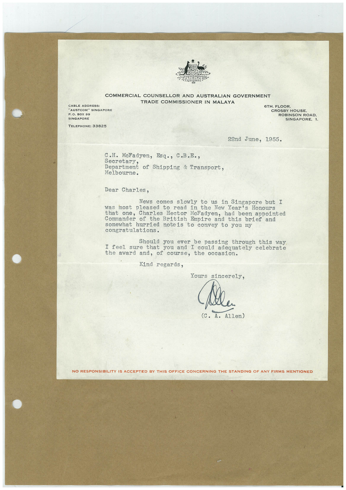

Book 1 · scan 104


Description
Transcription
Context
Review notes
Compare the machine draft with the scan. Handwriting and names need human review.
Artifacts
Edit the artifacts field in this note’s frontmatter to change these records. This summary is generated.
B01-S104-A01 — Letter — Book 1, scan 104
Types: Typed document, Letter
Scope: Whole scanned page; individual items can be split out during review.
Caption: Not mapped yet.
Caption source: Not recorded yet.
Caption status: unmapped
Machine transcription
COMMERCIAL COUNSELLOR AND AUSTRALIAN GOVERNMENT TRADE COMMISSIONER IN MALAYA CABLE ADDRESS: "AUSTCOM" SINGAPORE P. O. BOX 99 SINGAPORE TELEPHONE: 33825 6TH. FLOOR, CROSBY HOUSE ROBINSON ROAD. SINGAPORE, 1. 22nd June, 1955. C.H. McFadyen, Esq., C.B.E., secretary. Department of Shipping & Iransport, Melbourne. Dear Charles, News comes slowly to us in Singapore but I was most pleased to read in the New Year's Honours that one, Charles Hector McFadyen, had been appointed Commander of the British Empire and this brief and somewhat hurried noteis to convey to you my congratulations. Should you ever be passing through this way I feel sure that you and I could adequately celebrate the award and, of course, the occasion. Kind regards, Yours sincerely, Mela (C. A. Allen) NO RESPONSIBILITY IS ACCEPTED BY THIS OFFICE CONCERNING THE STANDING OF ANY FIRMS MENTIONED